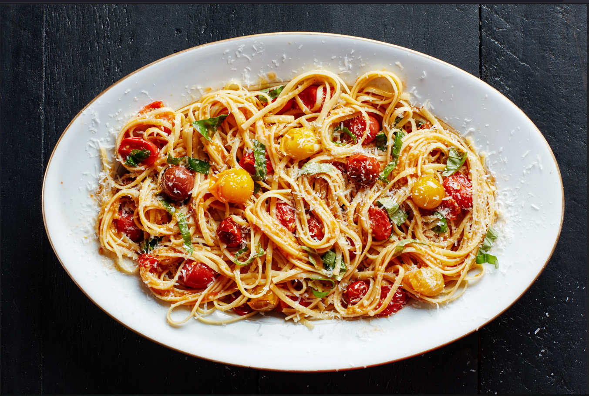

Pasta

Description
Juicy sweet tomatoes burst open in warm olive oil, creating a luxuriously silky sauce that comes together in minutes.
This recipe takes about 20-25 min in preparation for a 4 serving
Ingredient
- 12 ounces linguine
- 1½ pounds beefsteak tomatoes, quartered
- 2 tablespoons olive oil
- 2 large garlic cloves, finely chopped
- kosher salt and black pepper
- ½ teaspoon freshly ground black pepper
- ½ cup fresh basil, chopped
- ¼ cup grated Parmesan (1 ounce)
- Lots of love
Directions
- Cook pasta in a large pot of boiling salted water, stirring occasionally, until al dente; drain and transfer to a large bowl.
- Meanwhile, in a food processor, puree the tomatoes, oil, garlic, ¾ teaspoon salt, and ¼ teaspoon pepper.
- Toss the pasta with the tomato sauce and half the basil. Sprinkle with the Parmesan and the remaining basil just before serving.
Nutrition Facts
Per Serving 437 calories; protein 15g; carbohydrates 68g; sugars 7g; fiber 4g; fat 11g; saturated fat 2g; sodium 494mg; cholesterol 5mg.